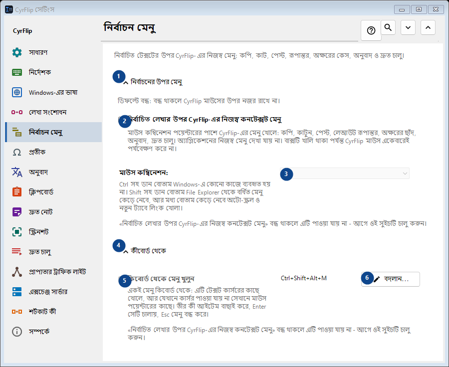
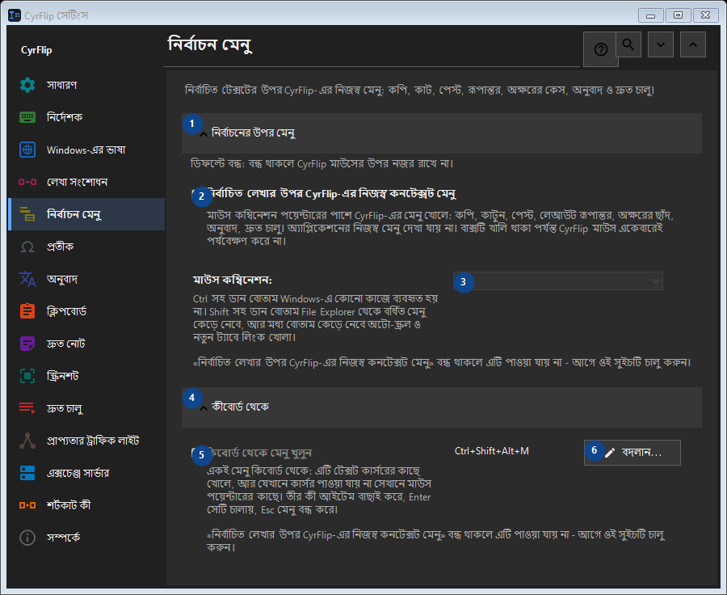

নির্বাচন মেনু
এর কাজ
নির্বাচিত টেক্সটের উপর CyrFlip-এর নিজস্ব মেনু: কপি, কাট, পেস্ট, রূপান্তর, অক্ষরের কেস, অনুবাদ ও দ্রুত চালু।


ব্যবহারের ক্রম
সেটিং সঙ্গে সঙ্গে প্রয়োগ হয়। নির্দিষ্ট ক্রম নেই; নিচের দলগুলি ব্যবহার করুন।
উপাদান
1. নির্বাচনের উপর মেনু
উল্লিখিত কাজের জন্য এই নির্দেশ ব্যবহার করুন। মেনে নেওয়ার আগে নিশ্চিতকরণ পড়ুন।
আপনার শর্টকাট2. নির্বাচিত লেখার উপর CyrFlip-এর নিজস্ব কনটেক্সট মেনু
মাউস কম্বিনেশন পয়েন্টারের পাশে CyrFlip-এর মেনু খোলে: কপি, কাটুন, পেস্ট, লেআউট রূপান্তর, অক্ষরের ছাঁদ, অনুবাদ, দ্রুত চালু। অ্যাপ্লিকেশনের নিজস্ব মেনু দেখা যায় না। বাক্সটি খালি থাকা পর্যন্ত CyrFlip মাউস একেবারেই পর্যবেক্ষণ করে না।
আপনার শর্টকাট3. মাউস কম্বিনেশন
«নির্বাচিত লেখার উপর CyrFlip-এর নিজস্ব কনটেক্সট মেনু» বন্ধ থাকলে এটি পাওয়া যায় না - আগে ওই সুইচটি চালু করুন। এই উপাদান এখন উপলব্ধ নয়। আগে বৈশিষ্ট্য চালু করুন বা একটি এন্ট্রি বাছুন।
আপনার শর্টকাট4. কীবোর্ড থেকে
উল্লিখিত কাজের জন্য এই নির্দেশ ব্যবহার করুন। মেনে নেওয়ার আগে নিশ্চিতকরণ পড়ুন।
আপনার শর্টকাট5. কিবোর্ড থেকে মেনু খুলুন
«নির্বাচিত লেখার উপর CyrFlip-এর নিজস্ব কনটেক্সট মেনু» বন্ধ থাকলে এটি পাওয়া যায় না - আগে ওই সুইচটি চালু করুন। এই উপাদান এখন উপলব্ধ নয়। আগে বৈশিষ্ট্য চালু করুন বা একটি এন্ট্রি বাছুন।
আপনার শর্টকাট6. বদলান - কিবোর্ড থেকে মেনু খুলুন
উল্লিখিত কাজের জন্য এই নির্দেশ ব্যবহার করুন। মেনে নেওয়ার আগে নিশ্চিতকরণ পড়ুন।
আপনার শর্টকাট